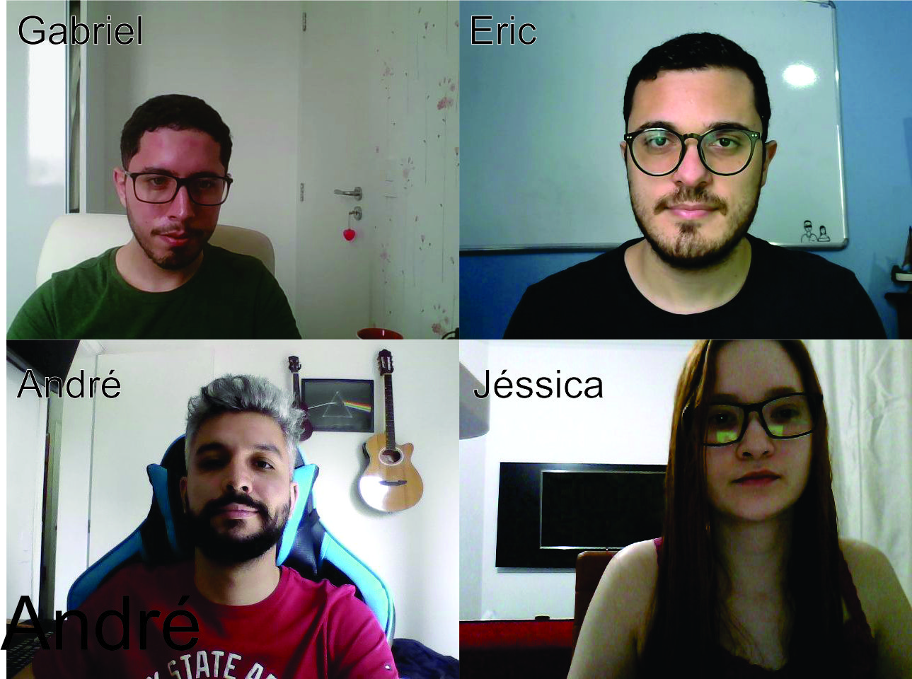
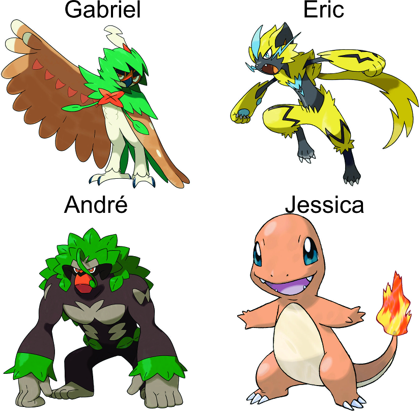

Neste laboratório, temos como objetivo o processamento e tratamento de imagens, e para isto, iniciamos os procedimentos utilizando o Google Colab para todos os integrantes executarem os códigos de criação e acesso da pasta ( My Drive/Colab Notebooks) necessária para realizarmos os procedimentos e importamos todas as bibliotecas utilizadas neste laboratório. Segue abaixo os codigo utilizado para este procedimentos.
import os
import numpy as np
import matplotlib.pyplot as plt
import cv2 as cv
from google.colab import drive
from google.colab.patches import cv2_imshow as gcv_imshow
drive.mount('/content/drive/')
base_path = "/content/drive/My Drive/Colab Notebooks/csm/lab2"
Após criarmos a pasta, executamos a captura de imagens onde cada integrante do grupo, utilizando os códigos via Google Colab, realizou a captura de uma foto utilizando uma peça de roupa diferente, tais fotos são usadas posteriormente para criarmos uma fotomontagem dos integrantes do grupo com resolução de 1280x960 pixels.
Após criarmos a foto montagem, realizamos a criação da imagem contendo nossos avatares. Escolhemos um avatar de pokémon, para cada integrante do grupo. A fotomontagem dos avatares possui dimensão de 1650x 618 pixels.
Utilizamos o codigo abaixo para diminuir a imagem dos avatores, em 50% e 25%
print("Tamanho original:", img_avatares.shape)
img_50 = cv.resize(img_avatares, None, fx=0.50, fy=0.50, interpolation = cv.INTER_CUBIC)
print("Tamanho após redução de 50%", img_50.shape)
img_25 = cv.resize(img_avatares, None, fx=0.25, fy=0.25, interpolation = cv.INTER_CUBIC)
print("Tamanho após redução de 25%", img_25.shape)

Realizamos o procedimento de alteração de imagem para gerarmos a versão P&B das imagens dos integrantes do grupo e de seus supostos avatares. Segue abaixo o codigo utilizado para criação e as imagens criadas.
def plot_pb_side_by_side(img):
grey = cv.cvtColor(img, cv.COLOR_RGB2GRAY)
grey_3_channel = cv.cvtColor(grey, cv.COLOR_GRAY2BGR)
horizontal_stack = np.hstack((img, grey_3_channel))
gcv_imshow(horizontal_stack)
img_grupo = cv.imread(base_path+'/grupo_legenda.jpg')
print("Grupo: ")
plot_pb_side_by_side(img_grupo)
print("\n\nAvatares:")
img_avatares = cv.imread(base_path+'/GRUPO_POKEMON.jpg')
plot_pb_side_by_side(img_avatares)
Continuamos utilizando o Google Colab para realizarmos a captura dos vídeos por dois dos integrantes do grupo. Um dos vídeos possui movimentos lentos e espaçados, enquanto o segundo vídeo apresenta movimentos mais rápidos e de menor intervalo de execução.
Em cada versão dos vídeos, nós realizamos a alteração de resolução da captura do vídeo, sendo a primeira versão possuindo 50% da resolução inicial e a segunda versão possuindo 25% da resolução inicial.
Segue abaixo a versão dos videos capturados, sem nenhuma alteração em sua resolução.
Realizamos as mudanças de resoluções em 50% e 25% para ambos os videos utilizando o codigo abaixo.
# video 1
!ffmpeg -i "/content/drive/My Drive/Colab Notebooks/csm/lab2/video-jessica.mp4" -vf scale=320:240 -preset slow -crf 18 "/content/drive/My Drive/Colab Notebooks/csm/lab2/video-jessica_50.mp4" -y
!ffmpeg -i "/content/drive/My Drive/Colab Notebooks/csm/lab2/video-jessica.mp4" -vf scale=160:120 -preset slow -crf 18 "/content/drive/My Drive/Colab Notebooks/csm/lab2/video-jessica_25.mp4" -y
# video 2
!ffmpeg -i "/content/drive/My Drive/Colab Notebooks/csm/lab2/video-gabriel.mp4" -vf scale=320:240 -preset slow -crf 18 "/content/drive/My Drive/Colab Notebooks/csm/lab2/video-gabriel_50.mp4" -y
!ffmpeg -i "/content/drive/My Drive/Colab Notebooks/csm/lab2/video-gabriel.mp4" -vf scale=160:120 -preset slow -crf 18 "/content/drive/My Drive/Colab Notebooks/csm/lab2/video-gabriel_25.mp4" -y
Segue os videos com as resoluções alteradas em 50% e 25%, juntamente com o codigo utilizado para visualização dos videos.
with open(base_path+"/video-jessica_50.mp4",'rb') as file:
video1_decoded_50 = "data:video/mp4;base64," + b64encode(file.read()).decode()
with open(base_path+"/video-jessica_25.mp4",'rb') as file:
video1_decoded_25 = "data:video/mp4;base64," + b64encode(file.read()).decode()
HTML(f"""
--aqui insere o codigo de exibição direcionando para o video desejado--
""")